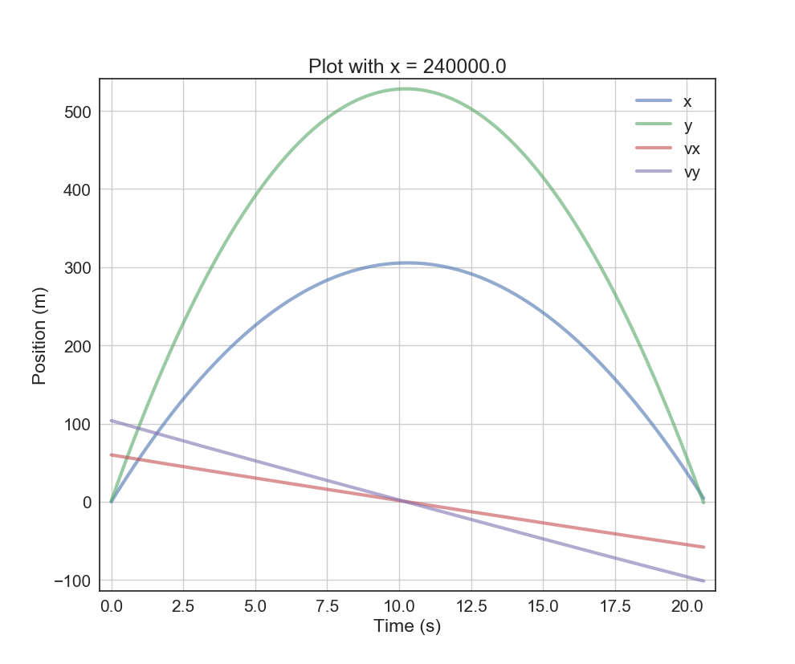
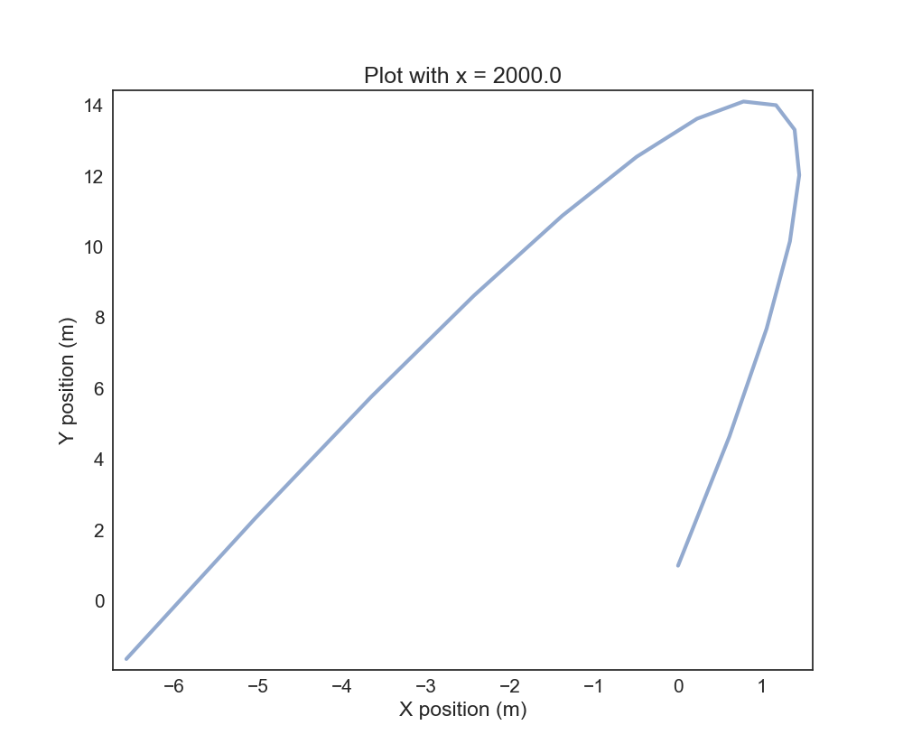
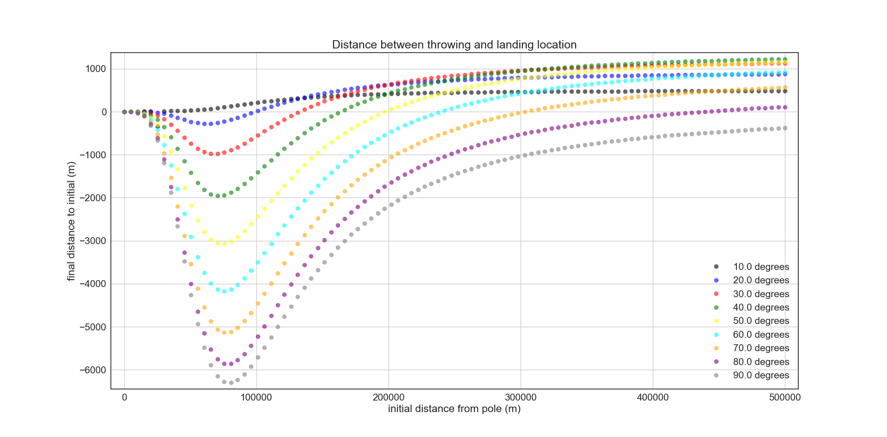
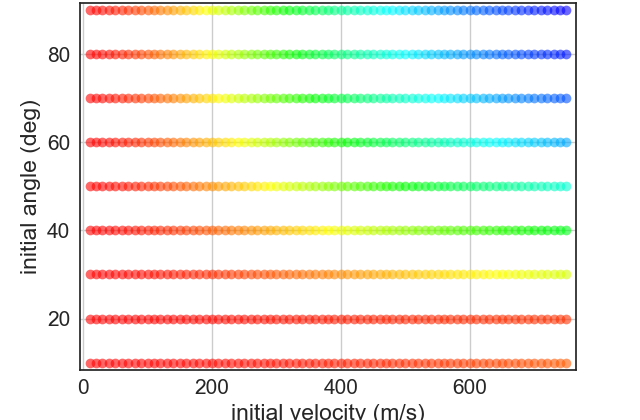

Inspiration
This project was done in the context of a kinematics project for a modeling and simulation class. Modeling something on flat earth was not only a very funny and entertaining idea, but it offered the opportunity to explore some really counter-intuitive physics.
Background
What exactly about flat earth is interesting to model? Well, flat earthers believe that the earth is accelerating upwards at 9.8 meters per second squared, which is how they explain why things accelerate towards the ground at that rate. We called this effective gravity in the model. However, they also believe in gravity. These two beliefs introduce a very interesting environment, as the gravity vector acting upon any projectile can change quite durastically over time in both magnitude and direction.
This project was made using Python. In order to model flat earth, we took the surface area of earth, the average density of the earth, and the weight of the earth and calculated the radius and thickness of a flat earth.
Results
This project produced some really interesting results. The complex nature of the environment that we modeled led to some quite counter-intuitive results.

These two graphs show the trajectory of a standard baseball when thrown at 60 degrees relative to horizontal with an initial velocity of 120 meters per second (a bit unrealistic, yes), 240,000 meters away from the north pole, which is the center of flat earth. Under these conditions, the ball will come back to the launch site, as the vector sum of drag, gravity, and effective gravity are roughly 60 degrees throughout the flight of the ball. As such, the ball returns to the original position with about the same velocity and angle.
This graph shows the trajectory of a ball thrown 80 degrees to horizontal very close to the pole. Because of the force of gravity, it actually ends up behind the throwing position.
In this graph, we swept parameters for throwing distance from the pole as well as throwing angle relative to horizontal. A negative value on the y axis corresponds to the ball landing behind the original throwing positiion.
This heat map is a sweep of both initial velocity and throwing angle with a constant distance from the pole. Cool colors represent large absolute distances between the throwing position, and landing position while warm colors represent small absolute distances. It really shows the counter-intuitive nature of physics on a flat earth, as one would normally expect a pretty uniform transition from hot to cold as the velocities increase, however this is not the case